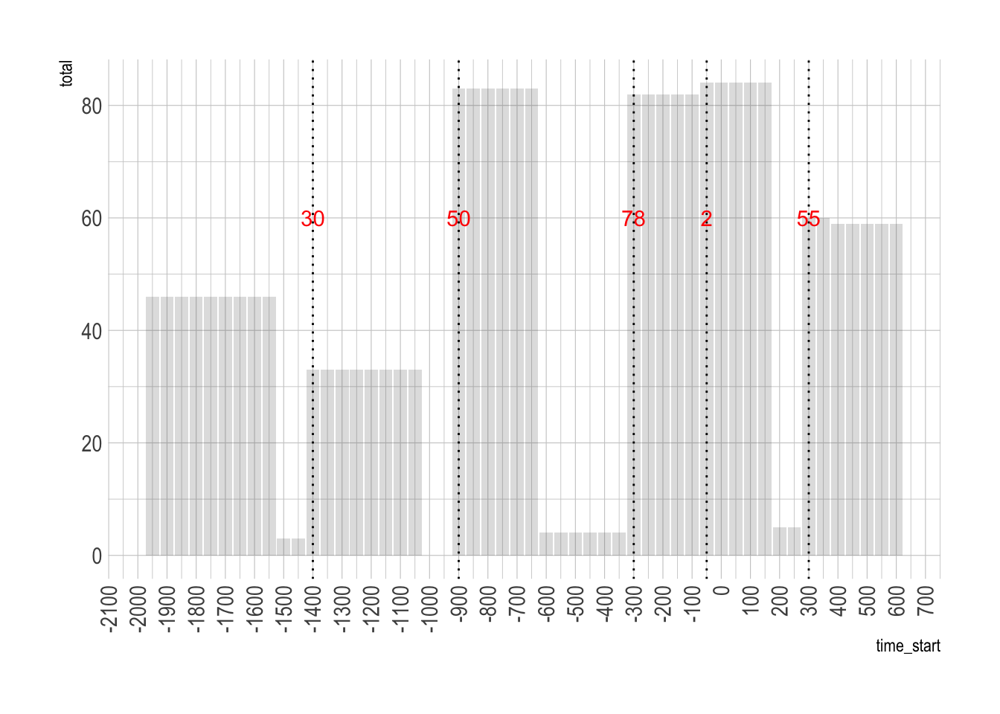
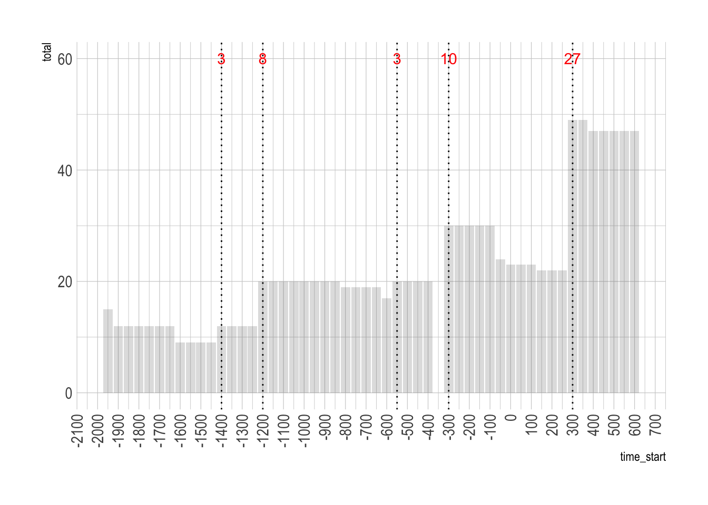

Code
# packages
library(sf)
library(tidyverse)
library(tidyr)To be added
To Be Done = Population Growth (compound average annual increase)
Packages
# packages
library(sf)
library(tidyverse)
library(tidyr)Data
# load data
sites = readRDS("../data/tab/njs_sites_LONG_SF.rds")Count sites by Time Block
# 1: count sites by time block
sites_count = sites %>%
mutate(time_start = factor(time_start)) %>%
st_drop_geometry() %>%
group_by(time_start) %>%
summarise(total = n())
knitr::kable(head(sites_count, n = 6))| time_start | total |
|---|---|
| -3100 | 47 |
| -3050 | 47 |
| -3000 | 46 |
| -2950 | 46 |
| -2900 | 46 |
| -2850 | 46 |
Create Persistence Table
# 1 method nest data
# split data into list
s <- split(sites$id, sites$time_start)
# function
diffs <- function(i) c(paste("added", setdiff(s[[i]], s[[i-1]])),
paste("removed", setdiff(s[[i-1]], s[[i]])),
paste("backward", intersect(s[[i]], s[[i-1]])),
paste("forward", intersect(s[[i]], s[[i+1]]))
)
# run function - IMPORTANT change seqeunce 2:n-1
diffs_list <- setNames(lapply(seq_along(s)[2:(length(s)-1)], diffs), names(s)[2:(length(s)-1)])
# create dataframes
df = setNames(stack(diffs_list), c("id", "time_start"))
df= tidyr::separate(df,id, c("change", "id"), sep = " ")
df = df %>% filter(id !="")
df = df[,c(3,2,1)]
df_wide = df %>%
add_count(id, time_start,change) %>%
pivot_wider(-id,names_from = change, values_from = n, values_fn = sum)
# join summary table with total number of settlements per time block
df_wide = left_join(df_wide,sites_count)
# calculate number of new sites and per change
df_wide = df_wide %>%
mutate(new_sites= (total - lag(total)), # new cases per time block
pct_change = new_sites / lag(total) * 100) # percentage change
knitr::kable(head(df_wide))| time_start | backward | forward | removed | added | total | new_sites | pct_change |
|---|---|---|---|---|---|---|---|
| -3050 | 47 | 46 | NA | NA | 47 | NA | NA |
| -3000 | 46 | 46 | 1 | NA | 46 | -1 | -2.12766 |
| -2950 | 46 | 46 | NA | NA | 46 | 0 | 0.00000 |
| -2900 | 46 | 46 | NA | NA | 46 | 0 | 0.00000 |
| -2850 | 46 | 46 | NA | NA | 46 | 0 | 0.00000 |
| -2800 | 46 | 46 | NA | NA | 46 | 0 | 0.00000 |
Save
# save
write_rds(df_wide,"../data/tab/lcp_persistence.rds")# read data
njs_persistence = readRDS("../data/tab/njs_persistence.rds") %>%
mutate( time_start = as.numeric(as.character(time_start))) %>%
filter(time_start > -2000)
# get the positive pct change
per_change = njs_persistence %>%
filter(pct_change > 0)
# create plot
ggplot() +
geom_col(njs_persistence, mapping = aes(x = time_start, y = total), alpha = 0.2, color = NA) +
geom_vline(data = per_change, aes(xintercept = time_start), linetype="dotted") +
geom_text(data = per_change,
aes(x = time_start,
y = 60,
label = new_sites),
color = "red") +
hrbrthemes::theme_ipsum() +
scale_x_continuous(n.breaks = 40) +
theme(axis.text.x = element_text(angle = 90, vjust = 0.5, hjust=1))
# read data
# read data
lcp_persistence = readRDS("../data/tab/lcp_persistence.rds") %>%
mutate( time_start = as.numeric(as.character(time_start))) %>%
filter(time_start > -2000)
# get the positive pct change
per_change = njs_persistence %>%
filter(pct_change > 0)
# create plot
ggplot() +
geom_col(lcp_persistence, mapping = aes(x = time_start, y = total), alpha = 0.2, color = NA) +
geom_vline(data = per_change, aes(xintercept = time_start), linetype="dotted") +
geom_text(data = per_change,
aes(x = time_start,
y = 60,
label = new_sites),
color = "red") +
scale_x_continuous(n.breaks = 40) +
hrbrthemes::theme_ipsum() +
theme(axis.text.x = element_text(angle = 90, vjust = 0.5, hjust=1))